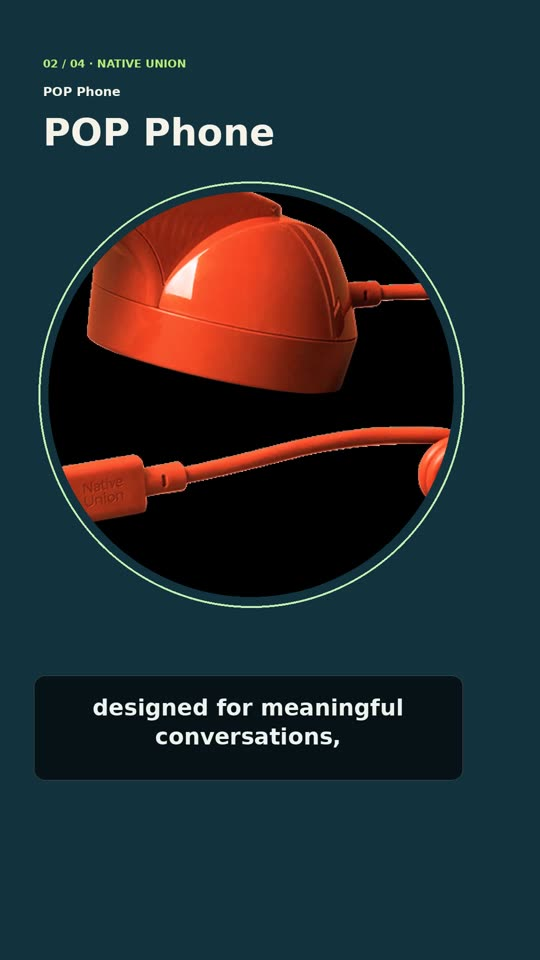
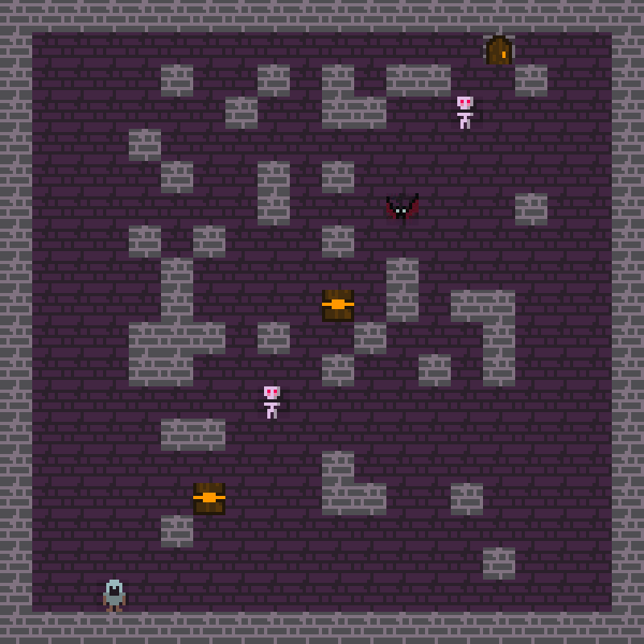
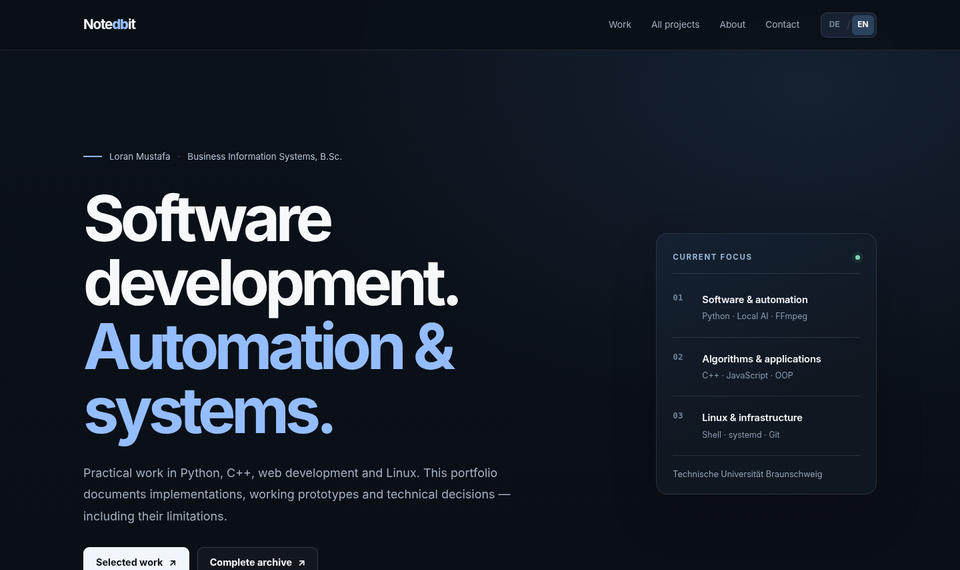

01 / 03Working prototype
Automated Product Video Generation
Python application that combines product data, local language models, speech synthesis and video rendering. A generated prototype and a separate Linux test are documented.
Loran Mustafa · Business Information Systems, B.Sc.
Practical work in Python, C++, web development and Linux. This portfolio documents implementations, working prototypes and technical decisions — including their limitations.
01 / SELECTED WORK
A selection of projects with a public output, interactive adaptation or source repository. Work in progress is labelled accordingly.

01 / 03Working prototype
Python application that combines product data, local language models, speech synthesis and video rendering. A generated prototype and a separate Linux test are documented.

02 / 03Group coursework + later adaptation
A university C++ group project with turn-based combat and randomized levels. A later JavaScript adaptation can be played in the browser.

03 / 03Live website
This portfolio is a static, bilingual website built with HTML, CSS and JavaScript, versioned on GitHub and deployed through GitHub Pages.
02 / PROFILE
I study Business Information Systems (B.Sc.) at Technische Universität Braunschweig. My interests include software engineering, automation, applied AI and practical IT systems.
My experience ranges from university coursework and group development to independently implemented applications and hands-on Linux configuration. Each case study distinguishes verified results from planned features.
03 / TOOLBOX
Python · C++ · Java · JavaScript · HTML · CSS
SQL (basics) · R
Linux · Shell · systemd · Git · GitHub
Qwen · Kokoro TTS · FFmpeg · PySide6 · pygame